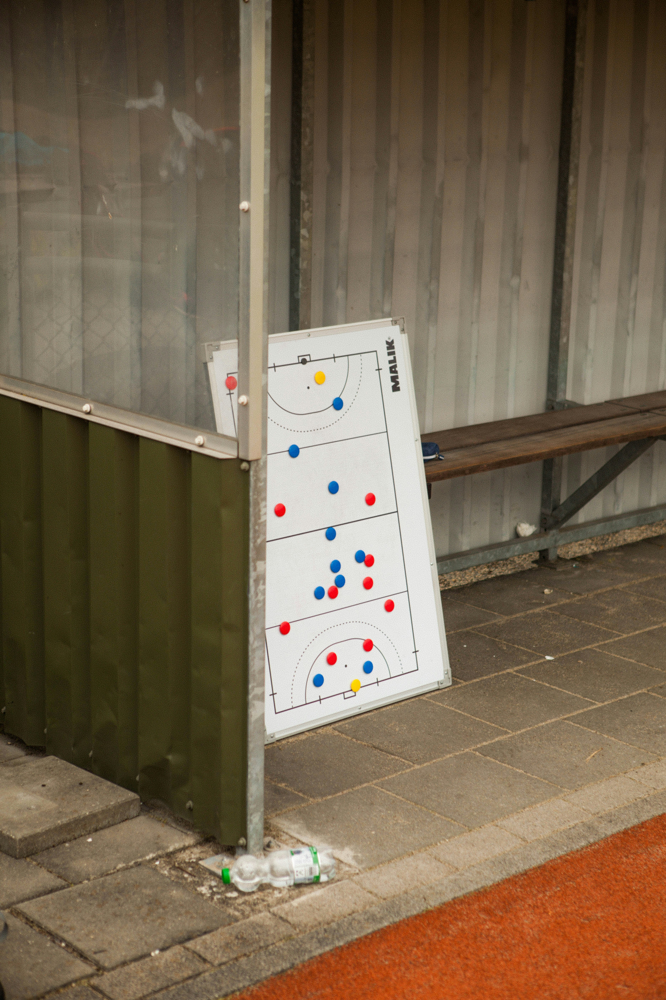

Beginner's Guide to Soccer
Get an introduction to the game of soccer, from the rules and positions to the vocabulary you need to understand the game.
Get StartedFeatures
Goals
The main objective of soccer is to score more goals than the other team. A goal is scored when the entire ball crosses the goal line.
Fouls
Fouls are called when a player breaks one of the rules, usually through physical contact that's not allowed or touching the ball with your hands when you're not supposed to.
The Field
A soccer field has many different areas that help organize the game. This includes the goals, center circle, sidelines, goal lines, and penalty areas.
Player Positions

In the game of soccer, there are different jobs that each of the positional groups have. The 4 main positional groups are forwards, midfielders, defenders, and goalkeepers.
- Forwards: The main job of forwards is to work together to find ways to score goals. They also act as the first line of defense by putting pressure on the opposing team when they have the ball.
- Midfielders: Midfielders control the middle of the field and connect the forwards and defenders, helping with both attacking and defending.
- Defenders: Defenders work together to stop the opposing forwards from scoring goals. They also help start attacks by passing the ball to midfielders and forwards.
- Goalkeepers: Goalkeepers are the last line of defense, protecting the goal and preventing the opposing team from scoring. They are the only players on the field who can use their hands, but only inside their own penalty area.
Offside
The offside rule stops attacking players from staying too close to the opponent's goal waiting for a pass. A player can be in an offside position when they are closer to the opponent's goal line than both the ball and the second to last opponent when the ball is played to them.
Soccer Vocabulary
Learning a few common soccer terms can make it easier to understand what is happening during a game.
- Match: Another word for a soccer game.
- Pass: When a player kicks the ball to a teammate.
- Dribble: When a player moves with the ball while keeping control of it.
- Assist: A pass that helps set up a goal.
- Penalty kick: A free shot taken from the penalty spot after certain fouls.
Ready to Watch Your First Game?
Now that you know the basics, you're ready to start watching and understanding a soccer game.
Learn More